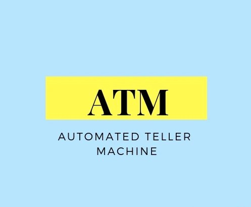

ATM
Machines making things eaiser and efficient for people.br
ATMs are known by a variety of names, including automatic teller machine (ATM) in the United States[1][2][3] (sometimes redundantly as "ATM machine"). In Canada, the term automated banking machine (ABM) is used,[4][5], although ATM is also very commonly used in Canada, and many Canadian organizations use ATM over ABM.[6][7][8] In British English, the terms cashpoint, cash machine and hole in the wall are most widely used.[9] Other terms include any time money, cashline, nibank, tyme machine, cash dispenser, cash corner, bankomat, or bancomat. Many ATMs have a sign above them indicating the name of the bank or organisation that owns the ATM, and possibly including the networks to which it can connect. ATMs that are not operated by a financial institution are known as "white-label" ATMs. atm image